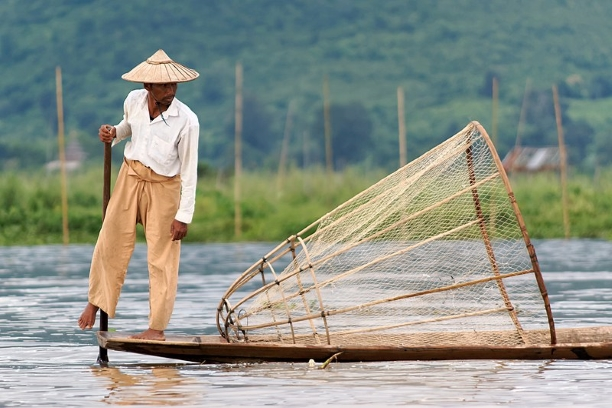
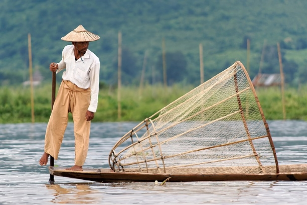

Environmental Concerns
 


History and Background
Inle Lake is suffering from the environmental effects of increased population and rapid growth in both agriculture and tourism. During the 65-year period from 1935 to 2000, the net open water area of Inle Lake decreased from 69.10 square kilometres (26.68 sq mi) to 46.69 square kilometres (18.03 sq mi), a loss of 32.4%, with development of floating garden agriculture, which occurs largely on the west side of the lake (a practice introduced in the 1960s). Lumber removal and unsustainable cultivation practices (slash and burn farming techniques) on the hills surrounding the lake are causing ever-increasing amounts of silt and nutrients to run off into the rivers that feed the lake, especially along its western and northern watershed areas. This silt fills up the lake; the nutrients encourage the growth of weeds and algae. More important however is the development of floating garden agriculture, largely along the western side of the lake. This practice encroaches into the diminishing area of the lake, since over time, the floating beds become solid ground. About 93% – nearly 21 square kilometres (8.1 sq mi) – of the recent loss in open water area of the lake, largely along its western side, is thought to be due to this agricultural practice. Direct environmental impacts associated with these combined agricultural activities within the wetlands and surrounding hills of the lake include sedimentation, eutrophication, and pollution. The water hyacinth, a plant not native to the lake, also poses a major problem. It grows rapidly, filling up the smaller streams and large expanses of the lake, robbing native plants and animals of nutrients and sunlight. At one time, all boats coming into Nyaung Shwe were required to bring in a specified amount of water hyacinth. Over the past twenty years, large-scale use of dredges and pumps has been employed with some success in controlling the growth of this plant. On a smaller scale, public awareness education and small-scale control have also been successful. Another cause for concern is the planned introduction of non-native fish species, such as the Grass Carp (Ctenopharyngodon idella) intended to improve fishery Sanitation in the villages around the lake is an ongoing concern for public health authorities, due to untreated sewage (with 72% of households using open pits, not latrines) and waste water flowing into the lake. To ensure fresh and clean water, some villages now have enclosed wells and public access to the well water. Some studies of the lake's surface water quality indicates that the water is not safe for consumption.Water from Inle Lake has dissolved oxygen ranges lower than those necessary for fisheries and aquatic life, while nitrite, nitrate and phosphate ranges are unusually high. Noise pollution is also a noticeable issue. The noise from the cheaper poorly muffled diesel engines driving the stern drive propellers is significant, and can be a distraction to the otherwise tranquil lake. The summer of 2010 registered very high temperatures causing the water level of the lake to drop so low, the lowest in nearly 50 years, that drinking water had to be fetched from elsewhere and the floating market was in danger of disappearing.One other serious consequence was that the hydroelectric plant at Lawpita, where the former capital Yangon received its power supply from, could not operate at its full capacity. In 2015, the United Nations added Inle lake to its World Network Biosphere Reserves. There are a total of 651 sites in 120 countries on this network, but Inle Lake is the first biosphere reserve to be added for Myanmar.